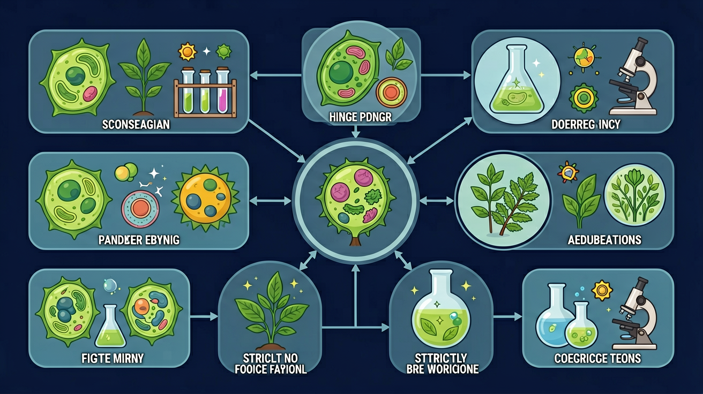

Gallery v1.0.0 · skill v7.14
遗传信息怎样被保存、表达、传递，又怎样影响性状？

已经知道：学生此前已掌握基因、性状、显隐性关系等基础概念，并通过豌豆实验知道性状在杂交后代中会分离和重组
但问题是：面对双因子杂交时，常混淆基因分离与自由组合的层次关系，难以理解9:3:3:1比例背后非同源染色体的独立分配机制
所以学：当农学家培育抗病高产小麦品种时，需要准确预测不同性状的组合概率，这要求掌握基因在减数分裂中的分配规律
先选一个卡点。后面的例子、互动和 AI 学伴都会围绕它给你最小提示。
选择或输入后，本课会围绕你的问题展开。
孟德尔选择豌豆的关键原因不包括？
现象入口：豌豆杂交实验中，亲代表型消失后又在子二代按比例重新出现。
机制解释：孟德尔遗传规律的本质是减数分裂时等位基因分离，非同源染色体上的非等位基因自由组合。
证据抓手：证据来自杂交实验比例、测交结果、配子类型和棋盘格推断。
变量线索：亲本基因型、配子类型、显隐性关系和基因是否独立遗传。做题时先找变量，再判断机制，最后写证据。
观察豌豆实验中 F2 代 3:1 和 9:3:3:1 的性状分离比
分析 YyRr 个体产生 YR/Yr/yR/yr 四种配子的比例
等位基因分离导致配子中 Y:y=1:1，非等位基因自由组合形成 1:1:1:1
用测交验证 F1 基因型时，预期比例 1:1 反映配子种类
情境：看到3:1或9:3:3:1比例时，必须先确认完全显性、独立遗传和样本量条件。
作答路径：当观察到F2代出现9黄圆:3黄皱:3绿圆:1绿皱时，首先确认黄色对绿色、圆粒对皱粒为完全显性，其次确认控制两性状的基因位于非同源染色体上独立分配，最后统计样本量需超过1600株以确保比例稳定。
评分提醒：典型失分：混淆分离与自由组合定律适用条件，未说明样本量要求，或错误将连锁遗传当作独立分配。
先用 PhET 观察转录和翻译如何把遗传信息转成蛋白质，再回到本课的 Canvas 任务，把“信息流”与 孟德尔遗传综合 联系起来。
💡 操作提示：拖动调控元件，观察 mRNA 和蛋白质产量变化，思考“表达量变化”和“性状变化”之间的证据链。
杂合子自交，理论分离比 3:1——但只有样本足够大时观察值才稳定接近理论值，这就是孟德尔种了几万株豌豆的原因。
💡 探究任务：把样本量从 40 拉到 500，观察显性比例如何波动收敛到 75%，解释为什么小样本的结论不可靠。
只套比例不写亲本基因型和配子，是遗传题常见空答案。
只说“增加/减少”不够，要写清改变的是 亲本基因型、配子类型、显隐性关系和基因是否独立遗传 中的哪一个。
没有实验现象、曲线趋势或结构证据，答案就像猜测。
下列哪组基因遵循自由组合定律？
视频用语音和动态画面回顾本课主线：问题情境 → 机制模型 → 证据判断 → 迁移应用。
预测遗传病风险、育种杂交结果，都要先写清基因型和配子。
提交后会检查你的解释是否包含现象、机制和变量。
如果学生只说出概念名称，继续追问：题干里哪个证据最关键？这个证据对应分子、细胞、个体还是生态系统层级？如果改变 亲本基因型、配子类型、显隐性关系和基因是否独立遗传 中的一个条件，结果会怎样？这三问能把答案从背诵推进到科学解释。
写出基因型AaBb产生的配子种类及比例
分析黄圆×绿皱豌豆F2中黄皱个体的基因型及概率
设计实验验证两对基因是否独立遗传，写出预期结果
孟德尔实验中，出现9:3:3:1比例的前提条件不包括？
学习小结：通过分离定律分析单对性状的3:1比例，再用自由组合定律计算独立遗传多对性状的组合比例，如YyRr自交得9:3:3:1。
先独立作答，再点选项查看对错与错因。
在孟德尔豌豆杂交实验中，F1代全部表现为高茎，这说明高茎性状是
孟德尔通过豌豆杂交实验发现的遗传规律是
孟德尔实验中，F2代高茎与矮茎的比例约为3:1，这是因为
孟德尔实验中，F1代全部表现为高茎，说明高茎性状对矮茎性状呈____。
答案：显性
F1代全部表现为高茎，说明高茎性状对矮茎性状呈显性
孟德尔通过豌豆杂交实验发现的遗传规律包括分离定律和____定律。
答案：自由组合
孟德尔发现的遗传规律包括分离定律和自由组合定律
下列关于孟德尔遗传定律的叙述，正确的是
设计实验探究豌豆高矮性状的遗传规律
❓ 为什么我算出来的概率和同学不一样？
❓ 显隐性性状到底怎么判断？
❓ 父母都是双眼皮为啥我是单眼皮？
学完这一课，这些问题你都能自信地回答。
✅ 实际产生AB/Ab/aB/ab四种等比例配子
💡 忽略非等位基因自由组合
✅ 需先推导基因型再对应表现型
💡 混淆遗传型与表型概念
口诀：分离自由组合牢，显隐比例要记好
类比：就像洗牌发牌，基因分离是洗牌，组合是发牌